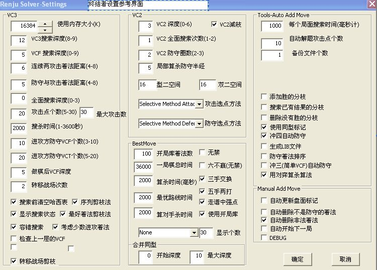

只有无禁才能更平衡！！！
#1 只有无禁才能更平衡！！！ 作者：xr__ 发表时间：2007-9-21 8:40:38
15路上的RIF是前半盘黑优 后半盘白优，才大至有些变化！
要是棋盘再大点 17路 或19路 RIF规则是跟本无法平衡的！！（去掉禁手，光三手交换五手打二倒是平衡的）
一种棋的生命力 ，一种棋是否能长久的存在下去，最主要的是看它能承载多少变化！围棋的变化量决定了它是第一大棋！
五子棋的变化量受它的本身限止，因为它每个局面下的可下变化非常有限，开局增加几倍，总的变化量就增加几倍，也是非常有限的，只有增大棋盘，它的变化量才会呈指数级上升！！可远远超过几个数量级！
俄罗斯 想法连珠的变化增大些，做的还是非常保守的 ，把棋盘改为17*17，结果因为规则的不平等（单方受禁）白方的优势太大了，除了黑胜的开局，剩下的竟是白胜，所以只好去掉了四四禁手！！这就是俄罗斯的WRL 有兴趣的可以去看看！
当然如果双方禁手 ，还是会平衡些的！
所以单方禁手本身就是不平衡的，只是在15路棋盘、三手交换和五手打二的掩盖下，才使的它的不平衡性没有明显的表现出来！ RIF比较平衡是这三者共同的功劳！！跟禁手一点关系都没有，禁手只会导致不平衡！
要平衡，只能靠交换，两次交换，移子规则等！且如果是大棋盘的单方禁手，怎么交换都难以平衡！
#2 Re:只有无禁才能更平衡！！！ 作者：yoda 发表时间：2007-9-21 10:42:44
平衡与否是靠数据、实践说话，不是在这里喊口号。你提出一些无禁平衡的例子来，大家研讨研讨。#3 Re:只有无禁才能更平衡！！！ 作者：许相公 发表时间：2007-9-21 14:10:54
仔细思考一下就知道了，前一百手棋黑棋有一子之先的优势在那里，所以白棋基本上没有什么优势可言，可到了后半程，由于组型的原因黑棋一子之先的优势没有了，不仅要面对白棋正面的三三，四四，四三的进攻，还要面对禁手的折磨，攻击和防御的压力增加了一倍，竞技棋又是一种零和关系，所以可以看做是白棋进攻点增加了一倍。可是组型需要空间，空间越大，取得先手的一方效率越高。
在RIF规则下，黑棋胜利大多是在前半段凭借一子之先的优势率先组型获胜；而到了后半段，由于没有那么大的空间，黑棋与白棋都不可能再组型取胜，这时候只能从已经组型的内部进行挖掘，因而白棋可以抓禁手的优势就显现出来，所以白棋获胜一半以上是抓禁手胜的
#4 Re:只有无禁才能更平衡！！！ 作者：xr__ 发表时间：2007-9-22 14:36:53
我也不想跟谁争，只是说出我觉得应该说的！ 不想让初学者被蒙！！某些人，心里明明白白 无禁不错，却偏要诋毁无禁！
我不可能证明什么，只能让实践去证明！ 多少年后再看看 谁更可笑！
#5 Re:只有无禁才能更平衡！！！ 作者：yoda 发表时间：2007-9-22 14:41:29
可怜到一个例子都举不出的地步？你怎么去和爱好者推广你的平衡无禁规则呢？靠大家坐下来空想吗？多少年之后谁可笑未知，目前来看可笑的是你。
#6 Re:Re:只有无禁才能更平衡！！！ 作者：许相公 发表时间：2007-9-26 9:28:12
引用：
原文由 yoda 发表于 2007-9-22 14:41:29 :可怜到一个例子都举不出的地步？你怎么去和爱好者推广你的平衡无禁规则呢？靠大家坐下来空想吗？多少年之后谁可笑未知，目前来看可笑的是你。
先别忙说别人，你要看例子那先回答我这个问题再说：设立禁手的初衷是不是因为黑棋先行所以优势太大？如果是，那为什么单单将四三设置为黑棋可以获胜的唯一手段？我看书上和网络上讨论的结果是因为三三，四四以及它们的衍生棋型出现的几率比四三要高，有什么证据可以证明这个观点吗？
我们大家再来思考一下这个问题：在开局的类型中对弈双方的优势是不是在逐渐转化的？即在无禁手的前提下，有黑先必胜的开局，也有黑先优势的开局，也有黑先双方平衡的开局，我们现在的26种开具绝大多数都是黑先必胜和黑先优势的开局。那作为它的反逻辑体系，是不是也存在黑先劣势和黑先必败的开局呢？如果是，那只为黑棋设置禁手不就是一叶障目了吗？
#7 Re:只有无禁才能更平衡！！！ 作者：连珠木易 发表时间：2007-9-29 10:18:00
说的好！#8 Re:只有无禁才能更平衡！！！ 作者：yzlich 发表时间：2008-3-1 18:51:26
那个许相公可以统计一下的么,比如说你用和别人下5000盘统计一下就可以了.别在这浪费时间#9 Re:Re:Re:只有无禁才能更平衡！！！ 作者：游戏人间 发表时间：2008-3-4 14:39:37
引用：
原文由 许相公 发表于 2007-9-26 9:28:12 :引用：
原文由 yoda 发表于 2007-9-22 14:41:29 :可怜到一个例子都举不出的地步？你怎么去和爱好者推广你的平衡无禁规则呢？靠大家坐下来空想吗？多少年之后谁可笑未知，目前来看可笑的是你。
先别忙说别人，你要看例子那先回答我这个问题再说：设立禁手的初衷是不是因为黑棋先行所以优势太大？如果是，那为什么单单将四三设置为黑棋可以获胜的唯一手段？我看书上和网络上讨论的结果是因为三三，四四以及它们的衍生棋型出现的几率比四三要高，有什么证据可以证明这个观点吗？
我们大家再来思考一下这个问题：在开局的类型中对弈双方的优势是不是在逐渐转化的？即在无禁手的前提下，有黑先必胜的开局，也有黑先优势的开局，也有黑先双方平衡的开局，我们现在的26种开具绝大多数都是黑先必胜和黑先优势的开局。那作为它的反逻辑体系，是不是也存在黑先劣势和黑先必败的开局呢？如果是，那只为黑棋设置禁手不就是一叶障目了吗？
一直没看到有人会这么幼稚的认为禁手设置的初衷。什么叫33.44出现的几率要高？你从哪里看的？我怎么从来没看到过这种观点。取消33.44是因为如果加入了33.44黑棋取胜的手段就更加丰富。在某些局面下黑棋组型的方式更简单。而不是说33.44比43出现的几率要高？明白？不明白就多下下。
第二种观点就更可笑了。现在讨论的就是规则改革问题。而还用RIF26种开局来简单的当做禁手的代名词就是偷换概念。
#10 Re:Re:Re:只有无禁才能更平衡！！！ 作者：竹子 发表时间：2008-3-4 16:52:51
引用：
原文由 许相公 发表于 2007-9-26 9:28:12 :为什么单单将四三设置为黑棋可以获胜的唯一手段？我看书上和网络上讨论的结果是因为三三，四四以及它们的衍生棋型出现的几率比四三要高，有什么证据可以证明这个观点吗？
“因为三三，四四以及它们的衍生棋型出现的几率比四三要高”
许相公看不清楚？还是看不明白？别自己随意篡改别人的话。
#11 Re:Re:Re:Re:只有无禁才能更平衡！！！ 作者：许相公 发表时间：2008-3-5 17:33:50
引用：
原文由 游戏人间 发表于 2008-3-4 14:39:37 :引用：
原文由 许相公 发表于 2007-9-26 9:28:12 :引用：
原文由 yoda 发表于 2007-9-22 14:41:29 :可怜到一个例子都举不出的地步？你怎么去和爱好者推广你的平衡无禁规则呢？靠大家坐下来空想吗？多少年之后谁可笑未知，目前来看可笑的是你。
先别忙说别人，你要看例子那先回答我这个问题再说：设立禁手的初衷是不是因为黑棋先行所以优势太大？如果是，那为什么单单将四三设置为黑棋可以获胜的唯一手段？我看书上和网络上讨论的结果是因为三三，四四以及它们的衍生棋型出现的几率比四三要高，有什么证据可以证明这个观点吗？
我们大家再来思考一下这个问题：在开局的类型中对弈双方的优势是不是在逐渐转化的？即在无禁手的前提下，有黑先必胜的开局，也有黑先优势的开局，也有黑先双方平衡的开局，我们现在的26种开具绝大多数都是黑先必胜和黑先优势的开局。那作为它的反逻辑体系，是不是也存在黑先劣势和黑先必败的开局呢？如果是，那只为黑棋设置禁手不就是一叶障目了吗？
一直没看到有人会这么幼稚的认为禁手设置的初衷。什么叫33.44出现的几率要高？你从哪里看的？我怎么从来没看到过这种观点。取消33.44是因为如果加入了33.44黑棋取胜的手段就更加丰富。在某些局面下黑棋组型的方式更简单。而不是说33.44比43出现的几率要高？明白？不明白就多下下。
第二种观点就更可笑了。现在讨论的就是规则改革问题。而还用RIF26种开局来简单的当做禁手的代名词就是偷换概念。
又跟我玩这套，我现在手中关于五子棋方面的书籍中就有类似的表达，你要不要看一看？
当初在日式单纯限黑规则刚刚出台的时候用的这样的说法，因为有人提到过这个问题，为什么仅仅是将四三设计成黑棋取胜的唯一手段，我们得到的回答就是四四和三三以及它们的衍生棋型出现的几率要大于或等于四三出现的几率！
还有一个我一直未曾提到的问题： 有禁的棋手说如果扩大了棋盘将对黑棋更加的有利，但是在日式单纯限黑规则下我们看大的事实是只要扩大棋盘，那后半部分基本上黑棋不是被逼和就是被抓了禁手，谁能给我回答一下？这种说法又是怎么出来的？
RIF单纯限黑的规则本来就是存在缺陷，现在倒成了要想发展五子棋就需要现证明RIF的规则是如何有缺陷的。你可以把RIF规则下的连珠说成是五子棋的一种，但RIF规则绝对不是五子棋的全部。举证倒置，难怪五子棋无论是理论研究还是实践水平会严重的滞后。
最后要说明一下：我支持不仅仅是无禁的五子棋，而是在黑白双方博弈规则对称，博弈身份对等的情况下的竞技五子棋。不要拿什么支持无禁这样小儿科的套路来往我身上套。
#12 Re:只有无禁才能更平衡！！！ 作者：游戏人间 发表时间：2008-3-5 19:23:20
我和支持无禁的人不只一次说过我很支持规则的改革了。但是改革的前提是保留禁手。但是楼上这位依然在用RIF规则来说。我何时是用RIF规则来讨论了 ？你们这不是搞偷换概念是搞什么？
还有我不知道你手里的书是怎么回事。但是我就从来没看过 。我参加了无数的比赛经历的局面不下10万种。我想哪种棋型更容易出现和棋盘扩大后的效果我比你更有发言权。在我的经验中禁手就是为了更大的压缩黑组型方式。至于楼上是否非要开白必胜再来讨论就不知道了呵呵。在目前现行的规则中扩大棋盘绝对是对黑棋更加的有利。有非常多的局面白棋防守是靠的边路压缩。尤其在疏星开局中有大量这样经典的局面。至于不知道的那只能怪自己知识量不足了。所以如果规则不改棋盘绝对不能扩大。但是规则改了之后如何那就不是现在讨论的问题了。
RIF规则存在缺陷是经过了几十年的发展才把可下变化压缩到现在这个地步的。但是RIF是RIF。禁手是禁手。请不要一再的偷换概念。禁手是一种五子棋特有的攻防技巧。失去了禁手五子棋的技巧性将大大降低。先手方的优势将被无形的放大。这不是简单的依靠什么规则来解决的。当然如果楼上这位去QQ游戏初级房间肯定觉得不出先手优势意味着什么。
#13 Re:只有无禁才能更平衡！！！ 作者：许相公 发表时间：2008-3-6 21:13:42
单独设置四三成为禁手本身并没有什么可以值得深入讨论的问题，可就是在这个问题上出现了偏差，似乎下有禁的棋手总希望能够找出为什么黑棋只能四三取胜的理由来。以上的那些说法诸如四三的出现几率比三三和四四以及它们的衍生棋型要低或者是像竹子举的那个例文《为什么四三不能成为禁手？》也并不是我的说法，我对此的看法早已表述过了：
“五子棋的取胜手段不外乎三三，四四，四三。现在RIF的限黑规则将黑棋的三三和四四设置为禁手，将四三规定为黑棋取胜的唯一手段，为什么单单是四三能胜，其他的就不行呢？有些书籍上说是因为四三比三三，四四出现的几率要小一些，这种说法到底有什么依据呢？没有。这与说五子棋是黑先一定必胜同样没有依据。至今我也没有看到谁能拿出真是的证据来证明这种说法。
既然这种说法不能成立，那它们这三种取胜手段之间是个什么样子的关系呢？我认为是攻击效力之间关系，一个比一个攻击效力大。三三作为五子连珠取胜的手段它的攻击效力是最弱的，被攻击的一方可以通过连续的冲四化解它甚至直接取胜；四三要好一些，但也有可能被对方所牵制。唯独四四这种攻击手段最强，即使对方也使出冲四来阻挡，也不可能失效。所以才会有“四四无反先”的说法。这是正序的排列，要是倒着来说的话，即从这三种攻击手段谁的变化最多来说，那三三的变化最多，相对性也最强，四四是变化最少的攻击手段，最绝对；四三在它们两个之间，处于居中的位置。这就是它们三个之间的关系。”
我要表达的意思无非是四三也好，三三，四四也好，它们出现的几率应该是大致相同的。 根本没有必要在这方面做过多的纠缠。但是事与愿违，恰恰在这个问题，支持有禁的棋手都想说出个子鼠寅卯来。
再来回答楼上关于禁手的问题：我说有禁与无禁的区别不在于是否支持有禁手，而是作为黑白双方博弈的规则是否是平衡的，目前已知的所有竞技棋类（国际象棋，国际跳棋，围棋，象棋）它们的博弈规则就是对称的，唯独现在的五子棋的博弈规则不对称，这才是问题的关键所在。要支持有禁手，双方为什么不能都有禁手？我并未偷换概念，RIF的连珠规则如果没有单独限黑的禁手的话还是RIF规则吗？
既然你提到了保留禁手，那就应该明确当初在设置禁手的时候到底它起的是什么作用？这才是最关键。这次我可以百分之一百的担保：单独给黑棋设置禁手是为了限制其一子之先的优势或者是为了平衡黑棋的必胜所以才设置的。可是单独给黑棋设置禁手以后是否就达到了双方的平衡呢？并没有达到，而且黑必胜开局依然存在，黑棋在绝大多数的情况下依然可以简单必胜。为此我们又引入了前五手的平衡概念。三手棋可以交换，五手可以两打，既然是靠它来平衡黑白双方，那单纯限黑的禁手又有何意义呢？
建议楼上看看我的拙作，里面有我对现在连珠棋弊端的看法以及对禁手的看法，希望能对你有所启发
到底是先手必胜还是黑先必胜
http://hi.baidu.com/lizhenghong/blog/item/549279f41fb5a3d8f3d38564.html
谈谈我对五子棋的一些认识
http://hi.baidu.com/lizhenghong/blog/item/6d5d9d3d00dfad03baa167c5.html
禁手“禁”的是什么
http://hi.baidu.com/lizhenghong/blog/item/5e60533da15b04ec3c6d970d.html
#14 Re:只有无禁才能更平衡！！！ 作者：yzlich 发表时间：2008-3-7 19:18:57
我说这些支持无禁的人为什么偏偏要在无禁里下功夫?五子棋改革的方案有30种左右,你为什么就非要往无禁方面想.是想要显示你下无禁的水平比别人高,还是显示自己非常的聪明,可以证明只有无禁才能平衡?日本民间的五子棋就叫做五目,黑白两方都有三三禁手,以前的棋盘也是19路无四四禁手可以开妖刀的.但为什么人家还非要提出黑有禁,肯定有理由的.是有禁太复杂了么,我看魔兽里面的操作绝对比这复杂的多#15 Re:Re:只有无禁才能更平衡！！！ 作者：许相公 发表时间：2008-3-8 11:28:30
引用：
原文由 yzlich 发表于 2008-3-7 19:18:57 :
我说这些支持无禁的人为什么偏偏要在无禁里下功夫?五子棋改革的方案有30种左右,你为什么就非要往无禁方面想.是想要显示你下无禁的水平比别人高,还是显示自己非常的聪明,可以证明只有无禁才能平衡?日本民间的五子棋就叫做五目,黑白两方都有三三禁手,以前的棋盘也是19路无四四禁手可以开妖刀的.但为什么人家还非要提出黑有禁,肯定有理由的.是有禁太复杂了么,我看魔兽里面的操作绝对比这复杂的多
 ，说出你的看法，如果说不出，那请闭嘴
，说出你的看法，如果说不出，那请闭嘴
#16 Re:只有无禁才能更平衡！！！ 作者：汪洋孤舟 发表时间：2008-6-2 12:13:53

#17 Re:只有无禁才能更平衡！！！ 作者：wrwak 发表时间：2008-11-20 13:14:10
无禁手也是可以平衡 我喜欢下无禁手 因为qq上目前还没有说有谁弄了个无禁手黑石来下棋
无禁手计算力任然重要 这点就够了
#18 Re:Re:只有无禁才能更平衡！！！ 作者：nara 发表时间：2008-11-20 22:32:01
引用：
原文由 wrwak 发表于 2008-11-20 13:14:10 :因为qq上目前还没有说有谁弄了个无禁手黑石来下棋

renjuslover好象可以吧,看这个截图,如果是无禁,估计比有禁算起来更牛,更快.不过没有试过.你可以问有最新版的人,是否可以算无禁.如果可以的话,估计比黑石算有禁的牛.
#19 Re:只有无禁才能更平衡！！！ 作者：wrwak 发表时间：2008-11-20 22:51:31
哦 原来如此 我没有这个
有这个 我就不用来问 大残月的胜法了 还好作者收费 要不qq五子棋高一都不干净了。
#20 Re:只有无禁才能更平衡！！！ 作者：xr__ 发表时间：2008-11-23 14:59:33
终结者最新版在无禁对弈中 并没有象黑石+开局谱 在有禁中那样强!
就象无禁的第一手交换规则中 开局一般在边角 这时软件的表现相对还是比较弱的
#21 Re:Re:只有无禁才能更平衡！！！ 作者：walker 发表时间：2008-12-16 10:27:16
引用：不喜欢有人用软？这是科技进步的必然结果啊！
原文由 wrwak 发表于 2008-11-20 22:51:31 :哦 原来如此 我没有这个
有这个 我就不用来问 大残月的胜法了 还好作者收费 要不qq五子棋高一都不干净了。
#22 Re:只有无禁才能更平衡！！！ 作者：xr__ 发表时间：2009-1-4 22:25:36
软件是把双刃剑，我不反对用软件适当研究，但不要在此浪费太多时间。因为现在不管是禁手还是无禁 都反对下研究棋，都在改革。
至于用软件电人的，随它去吧，无聊的人 管不了了。
科技的进步 以后围棋软件都可能很强！
#23 Re:只有无禁才能更平衡！！！ 作者：战龙在野 发表时间：2009-1-6 12:43:34
我支持改规则，有没有禁手也无所谓，但是你要能做到平衡 简明 有效，如果像开局5手可以换5次的，拉到19*19的，下盘棋要下几小时的，动不动就发现有BUG的，等等这样的规则我想还是不要的好#24 Re:只有无禁才能更平衡！！！ 作者：xr__ 发表时间：2009-1-20 17:58:14
平衡 简明 有效!!
说到点子上了,这是我们的目标.
#25 Re:只有无禁才能更平衡！！！ 作者：restry 发表时间：2009-1-21 20:21:07
感觉许相公是读死书的人